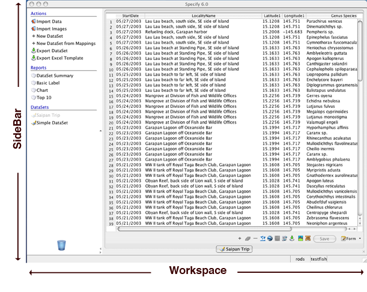
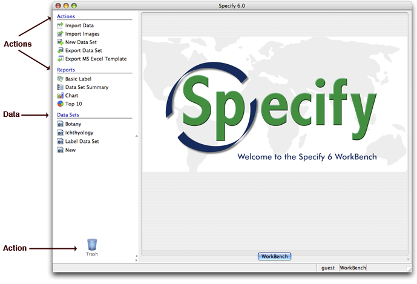

The Specify 6 team spoke with many Collection Managers while designing the new Specify 6. While conducting interviews and reading evaluations it became clear that the community needed a seperate tool for working with data before it was cataloged into Specify. Some collections require such a tool for entering legacy data, others want a small, standalone tool to take in the field and still others need to manipulate their data before cataloging it in Specify without having to enter it into a spreadsheet first, and then re-enter it into Specify.
The WorkBench was created to meet these specific needs within the community. It is the pre-catalog data manipulation component of Specify 6. It offers the following features:
Data is entered, edited, organized and stored in a Data Set. The WorkBench offers many features for manipulating the data within Data Sets before it is cataloged into Specify 6.
One of the most important of these features is the organization of the data into Specify fields. This is not only necessary for other features in the WorkBench to function correctly, but also ensures that the data will upload correctly into Specify 6. The column headings for new Data Sets are chosen from a list of Specify fields corresponding to the Specify data model. The column headings can be renamed, but will still maintain a link to the original Specify field. These links are referred to as 'maps'. These maps can also be edited.
When data is imported from a CSV or MS Excel file the WorkBench will read the existing column headings and map them to Specify fields with a built-in 'automapper'. Any column headings that the WorkBench does not recognize and 'automap' can be manually mapped and edited.
Data Sets can be displayed as either a grid or a form.
The WorkBench also enables each record to link to an image within a Data Set. The linked images display in an image window that can be toggled on or off. This is particularly useful when entering data from scanned catalog cards or specimen labels.
Before using The WorkBench, it is important to understand its components and how they interact with each other. The two major components of the WorkBench are the Sidebar and Workspace.

The Sidebar contains Data and Action items:

Action items are used to manipate the Data Set items. There are four ways to initiate an action:
Every Sidebar item, except Import Data and Import Images, takes advantage of the 'drag and drop' functionality. For instance, dragging a Data Set item onto Export Data Set will export that Data Set. Dragging Export Data Set onto a Data Set item will produce the same result.
Drag and drop items are identified by a green outline when moused over. Non-drag and drop items are identified by a blue band. Also, grabbing a Data Set and dragging it downward will produce a green band around all the Action items that the Data Set can be dropped onto.
Sidebar items are further categorized by function; i.e. Actions, Reports, Templates and Data Sets.
| Actions: | Import Data | Click this to import data from an MS Excel or CSV file. |
| Import Images | Click this to import images for data entry. | |
| New Data Set | Click this to create a new Data Set. | |
| Export Data Set | Click this to create an MS-Excel document from a Data Set. | |
| Export Excel Template | Click this to create an MS-Excel document with the column headings from a Data Set. | |
| Reports: | Data Set Summary | Displays a summary of occurrence counts for one field (Column) within the Data Set. This is particularly useful when editing data to validate the input. |
| Basic Label | Creates a label from predefined column headings. | |
| Chart | Displays a Bar Chart summary of occurrence counts for one field (Column) within the Data Set. | |
| Top 10 | Displays a Pie Chart of the top 10 occurrence counts for one field (Column) within the Data Set. | |
| Data Sets | (Data Set names) | Provides a list of the available Data Sets. Click the name to open the Data Set in the Workspace. Note: When a Data Set is in use it becomes disabled on the Sidebar. This ensures that the Data Set can not change while it is in use. |
Delete any Data Set by dragging it to the trash can.
Data Sets and Reports open in the Workspace. The components of the Workspace are listed below:
The WorkBench allows many Data Sets to be open at the same time, but only one can display in the Workspace. The WorkBench creates a tab for each open Data Set, allowing users to select which will be displayed.
Select the 'x' to close an open Data Set or Report.
Data Sets are created with different Actions depending on the Work Flow. The following table lists a variety of Work Flows and a WorkBench solution:
| Work Flow | Action |
| I have data in an Excel spreadsheet | The "Import Data" action will import the data into a Data Set and map the existing Columns to the Specify fields. |
| I have data in a database | Export the data as a CSV file and use the "Import Data" action to import the data into a Data Set and map the existing Columns into Specify Fields. |
| I have legacy data (cards, labels, catalog pages) as images | The "Import Images" action will create a Data Set with each card image linked to a single record. |
| I have legacy data on physical cards, labels or catalogs | The "New Data Set" action will create an empty Data Set for entering data from the cards. |
| I have locality information on field notes | The "New Data Set" action will create an empty Data Set for entering data from the field notes. |
| I need to create labels from my field notes | Use the "New Data Set" action to create an empty Data Set to enter the field notebook information, then create the labels by dragging and dropping the Data Set onto the Basic Label. |
| I will be going into the field and want to enter information about specimens collected | |
| I will be visiting a collaborating Institution and want to take my data with me | Save the entire WorkBench Component and accompanying Data Sets onto a portable medium (USB key, CD, etc). |
| I will be visiting a collaborating Institution and want to take my data with me but they use a Mac and I use a PC | No problem! The WorkBench works the same on systems using Windows, Mac OS X as well as Linux. Simply save the entire WorkBench Component and accompanying Data Sets onto a USB key and run the WorkBench on your associate's Macintosh. |
| I will be visiting a collaborating Institution and want to merge our data but their data is in Excel | The "Export Data Set" action will export your data into an Excel spreadsheet. If you make changes to the data (not the Columns) while it is in the spreadsheet use "Import Data" to bring it back into the Workbench. |
| I want to verify my data that exists in a non-Specify database | Export the data as a CSV file from your database and then use the "Import Data" action to import the data into a WorkBench Data Set by mapping the existing columns into Specify fields. Then you can use the reporting features to verify your data. |
| I would like to link collection images to my existing Data Set | The WorkBench allows each record to link to one image. Use "Import Data" to import the data into a Data Set, then link the images to the records. |
| I would like to Georeference my data | Data in the WorkBench can be Georeferenced using BioGeomancer. (must list the neccesary fields here) |
| The latitude and longitude references in my data exist in different formats and I would like to make them all the same. | The WorkBench includes a Lat/Long Converter. Open the Data Set and click on the Converter button in the Grid View. |
| My data is in Specify 5 but I want to take advantage of the special features in the Workbench | ? |